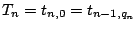
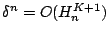
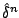
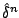
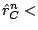

Next: About this document ...
Error analysis of BDF Compound-Fast multirate method for
differential-algebraic equations
Arie A. Verhoeven
HG 8.47 (Technische Universiteit Eindhoven)
Den Dolech 2, 5600 MB Eindhoven, The Netherlands
averhoev@win.tue.nl
Jan ter Maten, Bob Mattheij, Theo Beelen,
Ahmed El Guennouni, Bratislav Tasic
Analogue electrical circuits are usually modeled by
differential-algebraic equations (DAE) of type:
where
represents the state of
the circuit. A common analysis is the transient analysis,
which computes the solution
of this
non-linear DAE along the time interval ![$ [0,T]$](img4.png) for a given
initial state. Often, parts of electrical circuits have
latency or multirate behaviour.
for a given
initial state. Often, parts of electrical circuits have
latency or multirate behaviour.
For a multirate method it
is necessary to partition the variables and equations into
an active (A) and a latent (L) part. The active and latent
parts can be expressed by
where
are permutation matrices. Then
equation (1) is written as the following
partitioned system:
In contradiction to classical
integration methods, multirate methods integrate both parts
with different stepsizes. Besides the coarse time-grid
with stepsizes
, also a refined time-grid
is used with stepsizes
and multirate factors . If the two
time-grids are synchronized,

holds for all  . There are a lot of multirate approaches
for partitioned systems but we will consider the
Compound-Fast version of the BDF methods. This method
performs the following four steps:
. There are a lot of multirate approaches
for partitioned systems but we will consider the
Compound-Fast version of the BDF methods. This method
performs the following four steps:
- The complete system is integrated at the coarse time-grid.
- The latent interface variables are interpolated at the
refined time-grid.
- The active part is integrated at
the refined time-grid, using the interpolated values at the
latent interface.
- The active solution at the coarse
time-grid is updated.
The local
discretization error of the compound phase still
has the same behaviour
. Let
be the Nordsieck
vectors which correspond to the predictor and corrector
polynomials of
 . Then the error can
be estimated by
:
. Then the error can
be estimated by
:
Now
is
the used weighted error norm, which must satisfy
 TOL.
The local discretization error
is defined as the residue after inserting the exact solution
in the refinement BDF scheme. During the refinement instead
of
the perturbed local error
 is estimated. A tedious analysis
yields the following asymptotic behaviour:
is estimated. A tedious analysis
yields the following asymptotic behaviour:
Here
is the interpolation error at the
refined grid and
is the coupling
matrix. The perturbed local discretization error
behaves as
and can be estimated in a similar way
as . Thus the active error estimate
satisfies
. Let
 be the interpolation order, then it can be shown that
is less than
be the interpolation order, then it can be shown that
is less than
Here
are the Nordsieck
vectors which correspond to the predictor and corrector
polynomials of
. This error estimate
has the asymptotic behaviour
. It follows that
satisfies:
If
TOL
 TOL and
TOL then
TOL TOL.
TOL and
TOL then
TOL TOL.
We tested a
circuit with
inverters. The location of the
active part is controlled by the connecting elements and the
voltage sources. The connecting elements were chosen such
that the active part consists of 3 inverters. We did an
Euler Backward Compound-Fast multirate simulation on
with
. We get accurate
results combined with a speedup factor 13.
Next: About this document ...
Bruce Fast
2006-03-11